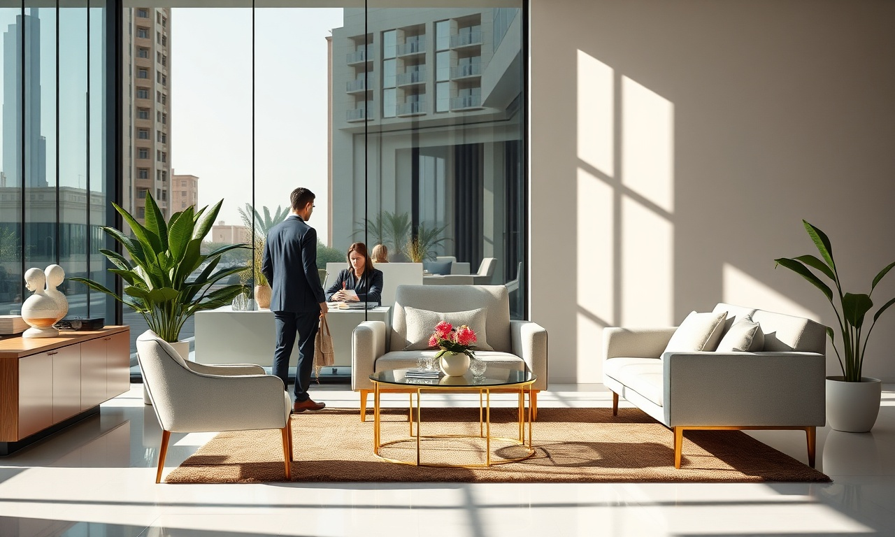

Le design et l'impression bougent tout le temps. Au Maroc, pour rester dans la course, il faut suivre le mouvement. Que vous soyez à Casablanca, Rabat ou Marrakech, les dernières innovations en graphisme et impression peuvent vraiment changer votre image de marque. Chez DatRey, agence digitale à Casablanca, on vous file un coup de main pour utiliser ces tendances et gagner en visibilité.
1. Minimalisme et Design Épuré
Le minimalisme est toujours en tête du design graphique. Des lignes nettes, beaucoup d'espace blanc, des couleurs en petite quantité : ça donne un côté sophistiqué. C'est parfait pour les cartes de visite, flyers et brochures.
Pourquoi adopter le minimalisme ?
- Améliore la lisibilité et la compréhension du message.
- Donne une image moderne et professionnelle.
- Réduit les coûts d'impression (moins d'encre).
2. Éco-Impression et Matériaux Durables
Les consommateurs marocains font de plus en plus attention à l'environnement. L'éco-impression, avec ses encres végétales, son papier recyclé et ses procédés qui limitent les déchets, devient un vrai argument marketing en 2025.
Vous souhaitez appliquer ces strategies sans effort ? Nos experts DatRey s'en chargent.
| Type d'impression | Impact environnemental | Coût |
|---|---|---|
| Traditionnelle | Élevé | Faible |
| Éco-responsable | Faible | Moyen |
3. Typographie Audacieuse et Personnalisée
Les polices deviennent un élément central du design. Des typographies audacieuses, personnalisées ou manuscrites, ça attire l'œil et ça renforce l'identité de marque. À utiliser pour les titres et slogans sur vos supports imprimés.
4. Couleurs Vives et Dégradés
Les couleurs vives et les dégradés sont tendance pour créer un impact visuel fort. Ça marche bien sur les affiches, les stands d'exposition et les emballages. Vérifiez juste que les couleurs collent à votre charte graphique.
5. Design Inclusif et Accessible
Le design inclusif pense à tout le monde, y compris aux personnes handicapées. Misez sur des contrastes forts, des polices lisibles et des pictogrammes universels. Ça élargit votre audience et montre votre engagement sociétal.
6. Impression Augmentée (RA)
La réalité augmentée débarque dans l'impression. Vos clients scannent un QR code ou une image avec leur smartphone et hop : vidéos, animations, liens. Cette technologie immersive booste l'engagement.
7. Personnalisation de Masse
Avec l'impression numérique, personnaliser chaque support ne coûte plus une fortune. Adressez-vous à vos clients par leur nom, adaptez les offres selon leur profil. Les campagnes personnalisées ont un taux de réponse jusqu'à 6 fois supérieur.
FAQ
1. Quelles sont les tendances design pour l'impression au Maroc en 2025 ?
Les tendances incluent le minimalisme, l'éco-impression, la typographie audacieuse, les couleurs vives, le design inclusif, la réalité augmentée et la personnalisation.

2. Comment intégrer ces tendances dans ma stratégie marketing ?
Commencez par auditer vos supports existants, puis priorisez les tendances alignées avec votre marque. Faites appel à une agence comme DatRey pour une mise en œuvre professionnelle.
3. L'éco-impression est-elle plus chère ?
Au début, le coût peut être un peu plus élevé, mais les économies à long terme (moins de gaspillage, image de marque positive) compensent. Et de plus en plus de clients préfèrent les marques responsables.
Comment aller plus loin ?
Les tendances design et impression au Maroc offrent des opportunités uniques pour se démarquer. En adoptant le minimalisme, l'éco-impression, la typographie audacieuse ou encore la réalité augmentée, vous renforcez votre image de marque et attirez une clientèle fidèle. Chez DatRey, on vous accompagne dans la création de supports imprimés percutants. Découvrez aussi nos services de référencement SEO et de publicité Google Ads pour une stratégie digitale complète. Contactez-nous dès aujourd'hui pour un devis personnalisé !
Besoin d'accompagnement ?
Les experts DatRey vous aident à atteindre vos objectifs digitaux au Maroc.
Demander un audit gratuit →